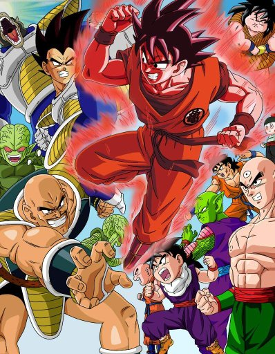
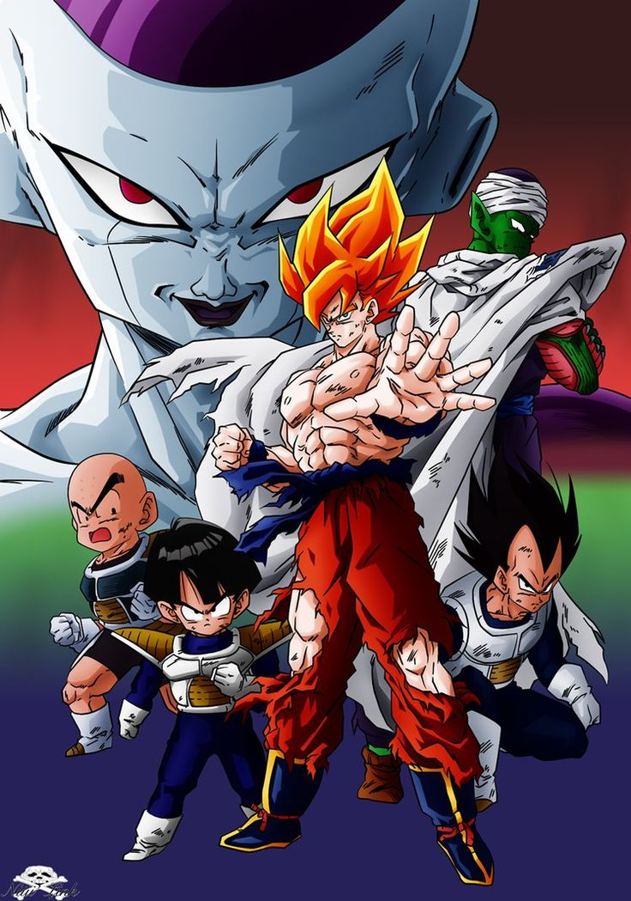
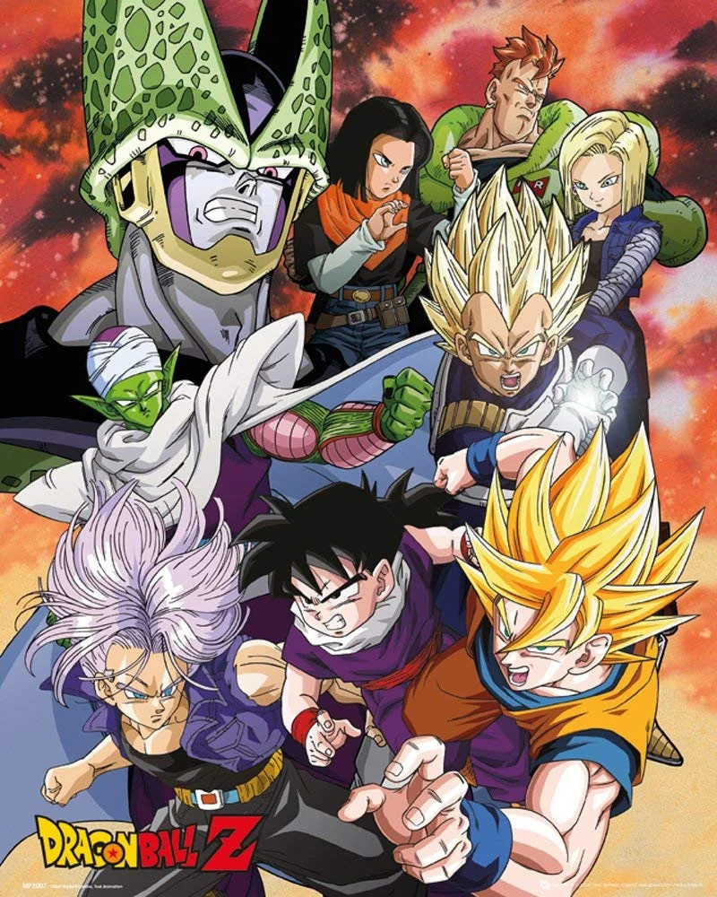
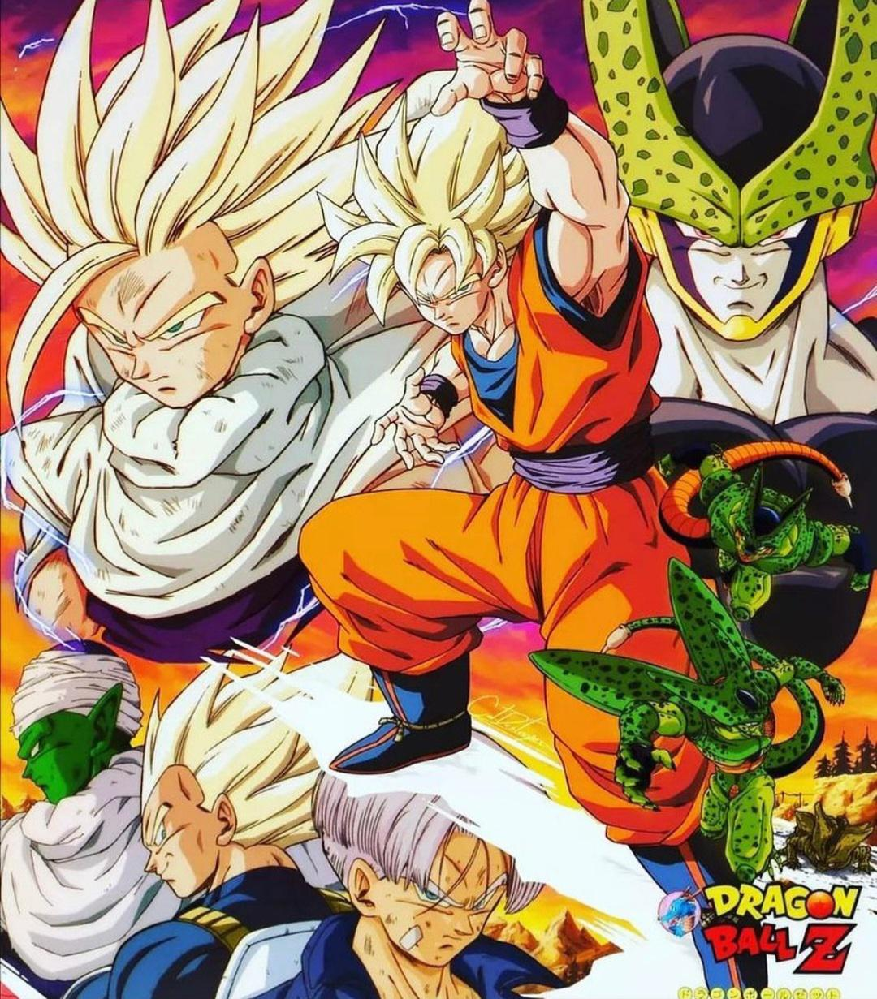
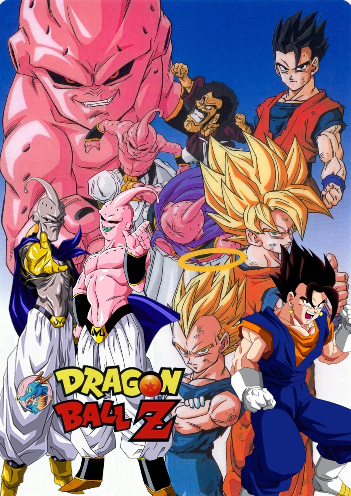
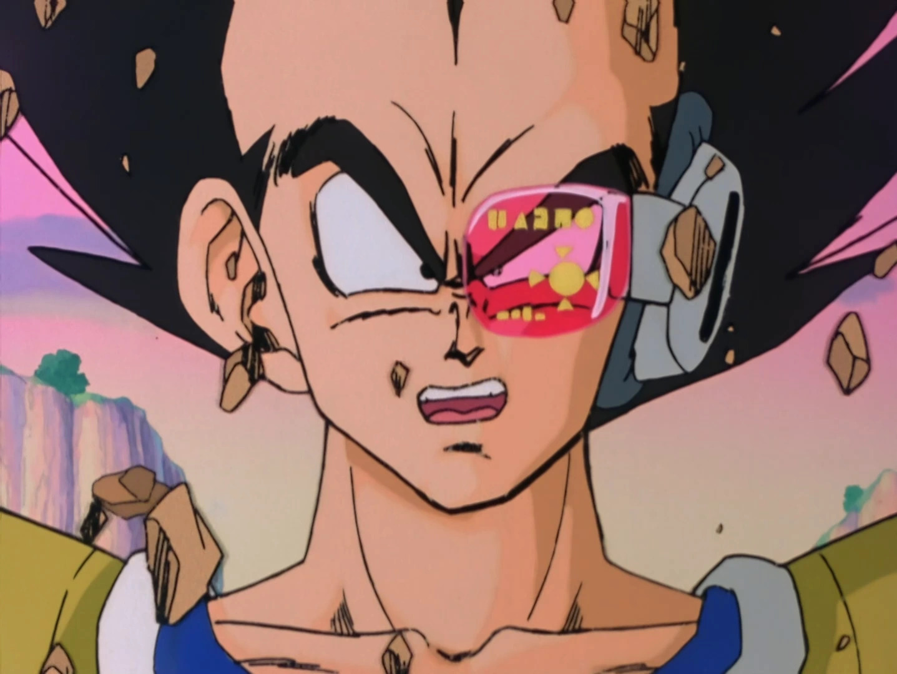

Dragon Ball© é uma famosa série de anime e mangá criada por Akira Toriyama.
Goku é o personagem principal da história e possui uma força extraordinária.
A saga é cheia de lutas, transformações e aventuras épicas!
Os mais íntimos abreviam o nome da série para DBZ.
Episódios: 1–35
Resumo:
Tudo começa quando um guerreiro misterioso chamado Raditz chega à Terra e revela que Goku é, na verdade, um Saiyajin – uma raça guerreira do espaço. Ele também revela ser irmão de Goku. Durante a batalha, Goku se sacrifica para derrotá-lo com a ajuda de Piccolo.
Enquanto Goku treina no mundo dos mortos com o Sr. Kaioh, dois outros Saiyajins, Vegeta e Nappa, vêm à Terra em busca das Esferas do Dragão. Há batalhas intensas contra os Guerreiros Z, onde muitos morrem, como Yamcha, Tenshinhan e Chiaotzu. Goku retorna e enfrenta Vegeta em uma das lutas mais épicas da série.
Episódios: 36 a 107
Resumo:
Com muitos amigos mortos, Goku e os outros partem para o planeta Namekusei, onde há outro conjunto das Esferas do Dragão. Lá, eles encontram Freeza, um tirano galáctico cruel, e seus soldados (Dodoria, Zarbon, e a Força Ginyu).
Goku chega depois e enfrenta a Força Ginyu e, por fim, Freeza, que revela ter várias formas de transformação. Durante a batalha final, Freeza mata o amigo de Goku, Kuririn, e isso faz com que Goku ative, pela primeira vez, a lendária forma de Super Saiyajin.
Goku derrota Freeza, mas poupa sua vida. Namekusei explode logo após.
Episódios: 108 a 139
Resumo:
Trunks, filho de Vegeta e Bulma, viaja do futuro para avisar que dois perigosos Androides surgirão e causarão destruição. Goku também descobre que será afetado por uma doença no coração.
Após 3 anos de treinamento, os Androides 17, 18, 19 e 20 aparecem, mas o verdadeiro perigo é revelado: o bio-androide Cell, criado pelo Dr. Gero. Cell viaja pelo mundo absorvendo energia e buscando se tornar mais forte.
Episódios: 140 a 194
Resumo:
Cell absorve os Androides 17 e 18 e se transforma na sua forma Perfeita. Ele desafia os Guerreiros Z para um torneio: os Jogos de Cell.
Durante a luta, Goku decide que seu filho Gohan tem mais poder e o incentiva a lutar. Após a morte de Goku (pela explosão de Cell), Gohan desperta sua verdadeira força ao atingir o Super Saiyajin 2 e destrói Cell com um poderoso Kamehameha.
Episódios: 195 a 291
Resumo:
Anos depois, surge uma nova ameaça: o mago Babidi, que tenta reviver um antigo monstro: Majin Boo. Vegeta, possuído pelo poder maligno, luta contra Goku como Majin Vegeta, mas depois se sacrifica para destruir Boo (sem sucesso).
Majin Boo se transforma várias vezes: Boo gordo ("bonzinho"), Boo magro (puro mal) e Kid Boo (forma original e mais perigosa). Goku alcança o Super Saiyajin 3, Goten e Trunks fazem a fusão para virar Gotenks, e Gohan retorna mais forte com o Poder Místico.
Na batalha final, Goku derrota Kid Boo com uma Genki Dama, usando a energia de toda a Terra. Depois, Boo é reencarnado como Uub, um garoto gentil que Goku decide treinar.
Em Dragon Ball, os Saiyajins usam um dispositivo chamado Scouter (ou rastreador de Ki) para medir o nível de poder de luta de um oponente.
Segundo os registros da raça Saiyajin, o cálculo exato da energia detectada pelo rastreador é dado pela fórmula:
En = m2 + 3ni3
As 7 Esferas do Dragão em Dragon Ball são artefatos místicos que, quando reunidos, podem invocar um dragão capaz de realizar desejos.
A batalha entre Goku e Freeza em Dragon Ball Z foi a mais longa do anime, durando 19 episódios e um total de 3 horas e 30 minutos.
São trocadilhos com vegetais em inglês e japonês. Por exemplo, Vegeta é uma variação de "vegetable".
O nome Kakaroto foi escolhido quando ele nasceu por Bardock e Gine, que são pai e mãe. Porém ele foi mudado e recebeu o “Goku” de seu guardião.
É mais de 8 mil! - Vegeta
"Meu coração é puro... pura maldade!" - Vegeta
"Eu sou o guerreiro lendário, criado pelos Saiyajins, para derrotar o mal!" – Goku
Este texto usa a antiga tag "font", apenas para fins de aprendizado.
Quer saber mais? Visite o site oficial: Dragon Ball Official